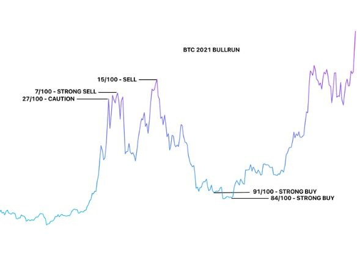

Investing is chaotic.
REMi simplifies it into
one number.
Meet your new financial sidekick. REMi gives you clarity on when to buy, sell, or sit tight. No more wasted hours staring at charts. No more second guessing markets. Enter your email for limited time free access.
REMi's decisions are algorithmically driven. Nothing is guaranteed. REMi does not provide financial advice.
Used by traders who like clarity, not chaos.
REMI SCORE
Strong Buy
Macro Outlook
REMi Report
These are great levels to DCA. Gold, Silver, DXY look weak. A bottom is nearing for stocks & crypto.
Watch how REMi simplifies your trading decisions with one clear number.
Why choose REMi?
REMi increases the probability for you to act rationally and decisively at moments that matter the most that affect lifetime wealth.
Transparent Analysis
REMi's Confidence Score is built from clearly defined market indicators and historical pattern analysis. You can see what factors are contributing, so the score is understandable—not a black box.
Once-in-a-Decade Decisions
REMi focuses on major market moments—cycle shifts, trend changes, and high-probability setups—so you are not reacting to short-term noise. It often identifies market bottoms and tops with confidence, helping you enter/exit when it matters most.
Save Time Without Guesswork
REMi continuously monitors markets and watches your back 24/7 with daily updates so you can stay informed without watching charts or news all day.
Daily Macro Analysis Report
REMi analyzes Macro indicators and generates a report providing daily insights that can be viewed directly on REMi's Dashboard or sent to your email.
Why Technical Analysis Works
Understanding REMi
Simple signals for complex markets.

Signal Generated
What exactly is REMi?
REMi is Really Easy Market Intelligence. It is an algorithmic market monitor that analyzes price action, volume, and momentum to identify high-probability trend shifts. Think of it as a weather forecast for markets—it does not predict the future, but it helps you prepare for likely conditions ahead.
Do I need trading experience or chart knowledge to use REMi?
No. REMi is designed to simplify decision-making. If you can understand a green light versus a red light, you can understand REMi’s confidence score.
What is behind REMi’s confidence score?
REMi continuously evaluates multiple technical signals—such as support and resistance, divergences, sentiment shifts, and historical chart patterns—across different timeframes. When signals align, the confidence score reflects that accordingly.
Does REMi place trades or manage my money?
No. REMi does not place trades, execute orders, or control your funds. It provides information and confidence signals so you remain fully in control of every decision.
How often are REMi scores updated?
REMi updates every minute. You do not need to monitor markets all day. Set your alerts and check in every once in a while—that's all you'll need.
How accurate is REMi?
No trading tool is 100%. We aim to shift the probabilities in your favor. Most traders guess; REMi calculates. The goal is not to win every trade-it is to manage risk and improve long-term outcomes.
What timeframes is REMi optimized for?
REMi is designed to catch cyclical bottoms/tops and catch macro swing trades. The shortest swing trade from entry to exit could be a week. The longest, years. Day trading is not what REMi is optimized for - at least not yet.
What makes REMi different from other trading tools?
Most tools overwhelm users with dozens of indicators and conflicting signals. REMi condenses complex analysis into one clear, actionable Confidence Score, helping you focus on higher-probability moments instead of reacting to market noise and making emotion-based decisions.
What markets can I use REMi for?
REMi is currently optimized for Crypto, Stocks, and Metals. Under the hood, it can analyze any market that has reliable price data and chart history.
Ready to trade with confidence?
Get early access to REMi for smarter buys, faster exits and less stress.
No spam, just daily clarity.